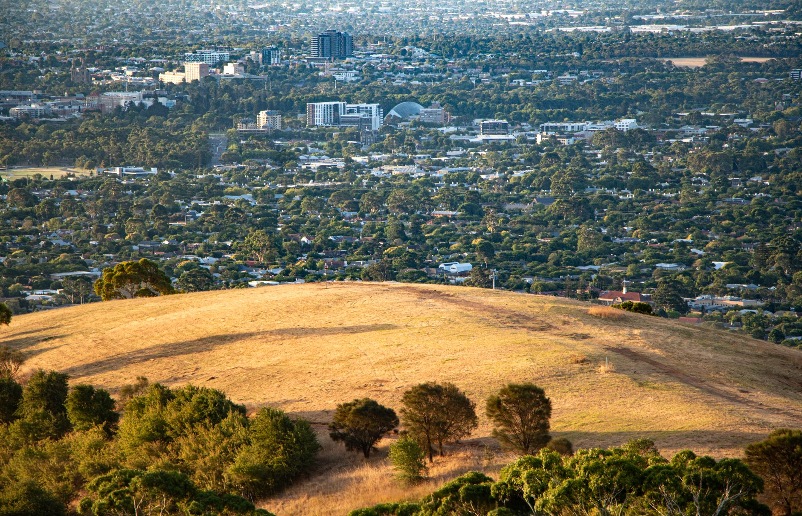

Itinerary · 6 days
Adelaide and Kangaroo Island: 6-Day Family Reset Itinerary
A moderate South Australia route with an Adelaide soft landing, one protected island transfer, two nature anchors and a real departure buffer.

Checked before you commit
Illustrative six-day plan for two adults and one or two children at a moderate pace. Ferry, flight, road and operator details are not verified here.
Adelaide 2 nights → one Kangaroo Island base 2 nights → return buffer; avoid a same-day island-to-international-airport dependency.
One city anchor, one protected transfer, two island anchors and recovery space.
Confirm ferry/flight, vehicle, weather, access, operator terms, prices and cancellation policies live.
Planning boundary: a booking-hub link indicates intent only; it does not prove a booking occurred.
Route and base logic
Use Adelaide as a soft landing, keep the island to one base and protect the return. The island day should not depend on a same-day connection with no buffer. If the onward departure is international or time-critical, add an Adelaide overnight rather than forcing the transfer.
Day-by-day plan
Day 1 — Adelaide soft landing
Arrive, settle near a practical city base and keep the evening local. Choose one nearby food option at Adelaide Central Market or a city park only if luggage and energy allow. Confirm the next day’s vehicle or collection plan before adding anything else.
Live check: Confirm accommodation access, vehicle/collection time, parking and a nearby meal.
Day 2 — Adelaide food and culture cluster
Morning: choose one compact anchor such as Adelaide Central Market, the South Australian Museum or Adelaide Botanic Garden. Protect a midday reset; afternoon stays in the same area rather than crossing the city. Keep a café or indoor option for heat or fatigue.
Live check: Check seasonal hours, timed entry, accessibility, dietary needs and closure days.
Day 3 — Protected move to Kangaroo Island
Morning: treat the ferry or flight as the day’s main task. Allow 3–5 hours for vehicle rules, luggage, check-in and the island transfer; do not make a wildlife booking depend on an unbuffered same-day connection. After arrival, keep the evening near the selected base.
Live check: Confirm ferry/flight timetable, vehicle and luggage rules, weather/cancellation policy, accommodation check-in and transfer time.
Day 4 — Wildlife or conservation anchor near base
Choose one confirmed experience near the base—such as a conservation visit, coastal wildlife area or guided nature activity—and keep the return route protected. Allow a 2–4 hour activity window plus meal/rest time; keep a short sheltered or self-guided alternative for weather or fatigue.
Live check: Confirm operator terms, access, age suitability, road conditions, weather and return timing.
Day 5 — Slow island day: food, farm, beach or short walk
Stay close to base and choose one local anchor such as a farm/food stop, beach or short coastal walk. Leave room for an unplanned pause rather than stacking distant lookouts and wildlife stops. Return early if energy or conditions change.
Live check: Check the selected stop’s seasonal hours, road conditions, access, weather and cancellation terms.
Day 6 — Return buffer and onward departure
Morning: protect the ferry/flight, vehicle return, traffic and luggage margin. If the onward flight is international or time-critical, use an Adelaide overnight rather than assuming the island-to-airport sequence is safe on the same day.
Live check: Confirm the return connection, vehicle return, airport access, weather and onward departure constraints.
Planning notes
Confirm the island base, ferry or flight schedule, vehicle requirements, road and weather conditions, wildlife operator availability, accessibility, seasonal hours, cancellation terms, park access and onward departure constraints. Dates are illustrative. Alfred can structure and compare the route; it does not prove live availability or a completed booking.
Build the full plan in Alfred
Generate, validate and edit the complete itinerary in the Alfred app.